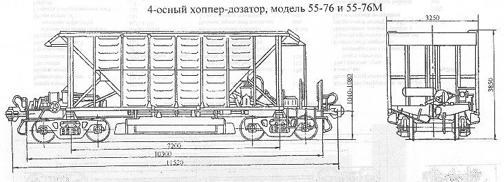

Назначение: для перевозки и дозировки балласта при путевых работах
Параметры
| для модели 55-76 | для модели 55-76 М | |
| Номер проекта | 390 | 390 |
| Технические условия | ТУ 32-ЦТВР-03-90 | ТУ 32-ЦТВР-03-90 |
| Модель вагона | 55-76 | 55-76 М |
| Тип вагона | 304 | 304 |
| Изготовитель | Великолукский ЛРЗ | Великолукский ЛРЗ |
| Грузоподъемность, т | 76 | 76 |
| Масса тары вагона, т | 24 | 24 |
| Нагрузка: статическая осевая, кН(тс) |
245,2(25,0) | 245,2(25,0) |
| погонная, кН/м(тс/м) | 85,1(8,68) | 85,1(8,68) |
| Объем кузова, м³ | 44,5 | 44,5 |
| Скорость конструкционная, км/ч | 120 | 120 |
| Габарит | 1-Т | 1-Т |
| База вагона, мм | 7200 | 7200 |
| Длина, мм: по осям сцепления автосцепок |
11520 | 11520 |
| по концевым балкам рамы | 10300 | 10300 |
| Ширина максимальная, мм | 3250 | 3250 |
| Высота от уровня верха головок рельсов максимальная, мм | 3850 | 3850 |
| Количество осей, шт. | 4 | 4 |
| Модель 2-осной тележки | 18-100 | 18-100 |
| Наличие переходной площадки | есть | есть |
| То же с ручным тормозом | нет | нет |
| Наличие стояночного тормоза | есть | есть |
| Количество разгрузочных люков, шт. | 4 | 4 |
| Размер разгрузочного проема в свету, мм: наружного люка |
350х2680 | 350х2680 |
| внутреннего люка | 300х2680 | 300х2680 |
| Число рабочих цилиндров разгрузочно-дозирующих механизмов, шт. | 4 | 4 |
| Максимальное давление воздуха в рабочей сети, МПа(атм.) | 0,4-0,6(4-6) | 0,4-0,6(4-6) |
| Год постановки на серийное производство | 1990 | 1990 |
| Возможность установки буфера | нет | нет |